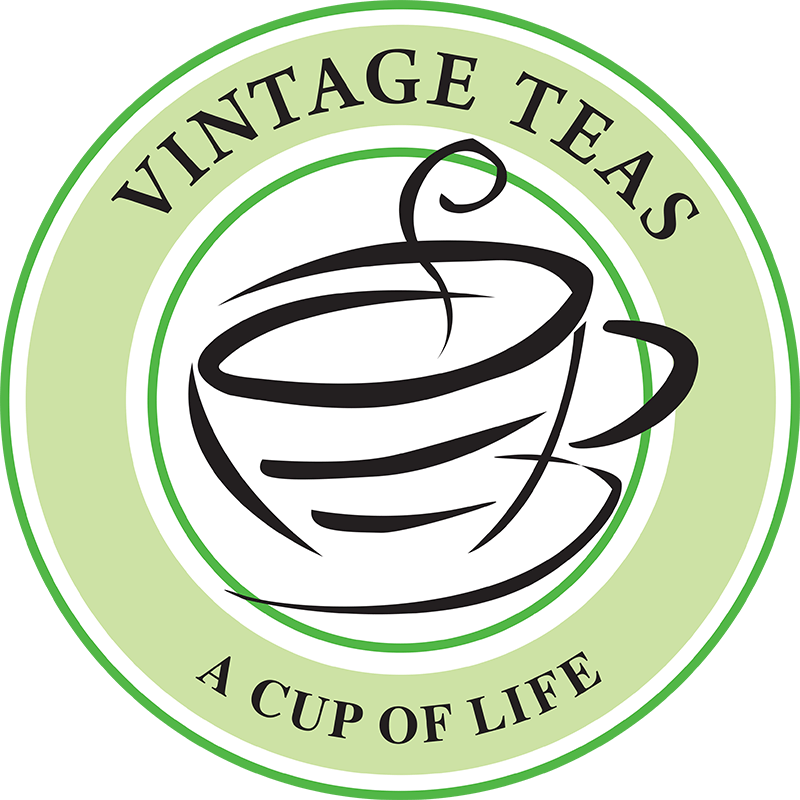

Vintage Tea
The story of Vintage Teas begins with three men and a cricket ball.Being pioneers in the tea industry, the three founders
of Vintage Teas, Sriantha Rajapakse, Mahinda Karunanayake and Vinodh Wijetunga felt it was time to venture out on their own.
As with all success stories, it wasn’t that simple, their venture was viewed with scepticism until finally fate gave them an
appointment with an ardent cricket enthusiast at the last bank on their list.The gentleman immediately recognised Sriantha
Rajapakse from his earlier days as a national cricketer and the rest as they say, is history.That was yesterday. And this is
what we do today.With a new office and a factory complex that covers more than two acres of land, 100 employees, and clients
around the globe, Vintage Teas has grown to become one of Sri Lanka’s largest tea exporters.Our teas encompass the finest tastes
and textures, using state-of-the-art equipment to create full-bodied aromatic blends, but our work doesn’t end there. Each product
is individually packaged to retain its freshness and thereafter shipped to specific clients. Vintage Teas makes sure each order is
tracked along its route and delivered on time, everytime.
